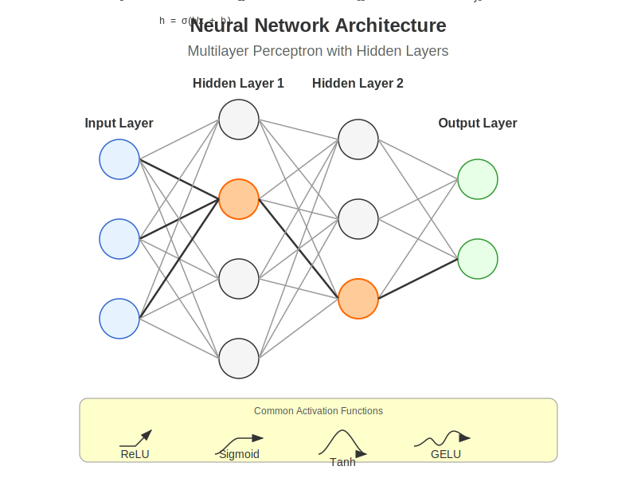
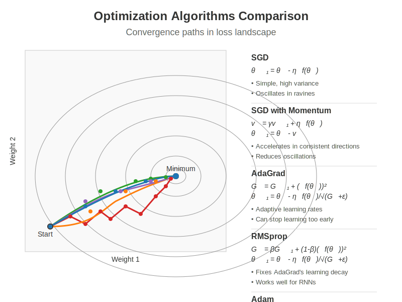
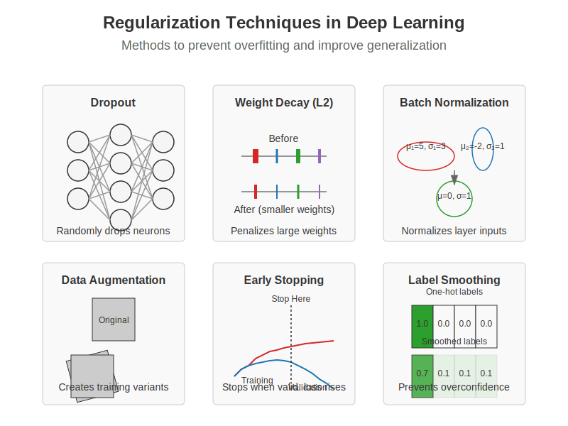
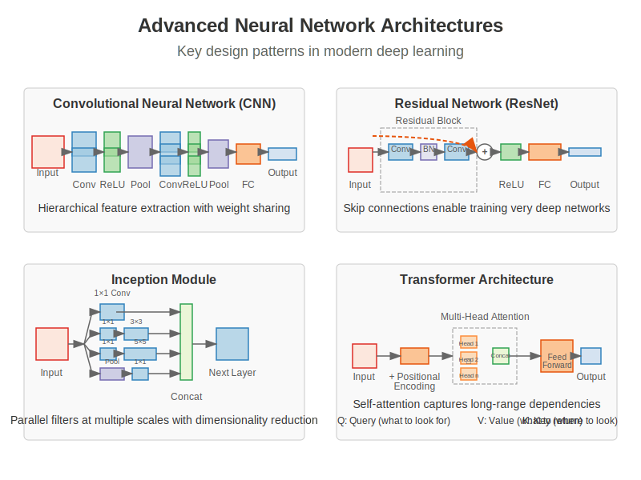
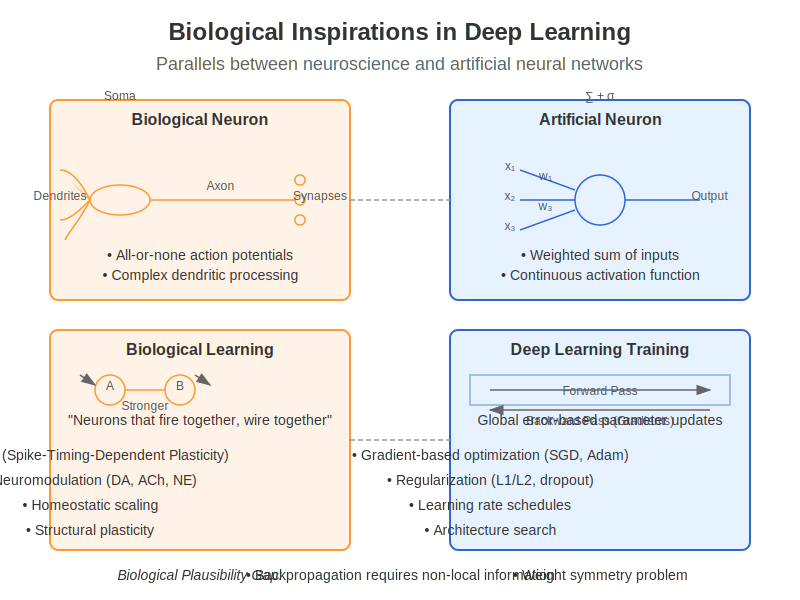
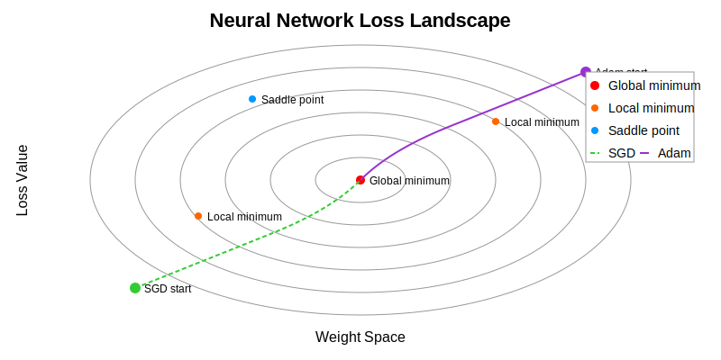

Chapter 10: Deep Learning: Training & Optimisation#
Learning Objectives
By the end of this chapter, you will be able to:
Master deep neural network architectures and training techniques
Understand optimization algorithms and their underlying mathematical principles
Implement key deep learning components from scratch and with frameworks
Apply best practices for model development and troubleshooting
Compare biological and artificial optimization approaches
10.1 Neural Network Fundamentals#
Deep learning has revolutionized AI by enabling models to learn hierarchical representations directly from data. At its core, deep learning is built on neural networks with multiple layers that progressively extract higher-level features.
 Figure 10.1: A multilayer perceptron with two hidden layers, showing how neurons connect between layers and activate through non-linear functions.
10.1.1 Multilayer Perceptrons#
Multilayer perceptrons (MLPs) are the foundational architecture of deep learning, consisting of an input layer, one or more hidden layers, and an output layer.
import numpy as np
import matplotlib.pyplot as plt
import torch
import torch.nn as nn
import torch.optim as optim
# Define a simple MLP using PyTorch
class SimpleMLP(nn.Module):
def __init__(self, input_size, hidden_sizes, output_size):
"""
A basic multilayer perceptron implementation.
Args:
input_size: Number of input features
hidden_sizes: List of hidden layer sizes
output_size: Number of output units
"""
super(SimpleMLP, self).__init__()
# Create a list to hold all layers
layers = []
# Input layer to first hidden layer
layers.append(nn.Linear(input_size, hidden_sizes[0]))
layers.append(nn.ReLU())
# Hidden layers
for i in range(len(hidden_sizes) - 1):
layers.append(nn.Linear(hidden_sizes[i], hidden_sizes[i+1]))
layers.append(nn.ReLU())
# Final layer
layers.append(nn.Linear(hidden_sizes[-1], output_size))
# Combine all layers into a sequential model
self.model = nn.Sequential(*layers)
def forward(self, x):
"""Forward pass through the network."""
return self.model(x)
# Create an example MLP
input_size = 10
hidden_sizes = [128, 64, 32]
output_size = 2
model = SimpleMLP(input_size, hidden_sizes, output_size)
# Display model architecture
print(model)
The power of MLPs comes from their ability to approximate any continuous function with sufficient neurons in the hidden layers (universal approximation theorem).
10.1.2 Activation Functions#
Activation functions introduce non-linearity into neural networks, allowing them to learn complex patterns.
def plot_activation_functions():
"""Plot common activation functions used in deep learning."""
# Generate input values
x = np.linspace(-5, 5, 1000)
# Calculate activation function outputs
sigmoid = 1 / (1 + np.exp(-x))
tanh = np.tanh(x)
relu = np.maximum(0, x)
leaky_relu = np.where(x > 0, x, 0.1 * x)
elu = np.where(x > 0, x, np.exp(x) - 1)
# Create plot
plt.figure(figsize=(12, 8))
plt.plot(x, sigmoid, label='Sigmoid')
plt.plot(x, tanh, label='Tanh')
plt.plot(x, relu, label='ReLU')
plt.plot(x, leaky_relu, label='Leaky ReLU')
plt.plot(x, elu, label='ELU')
plt.grid(True)
plt.legend()
plt.title('Common Activation Functions')
plt.xlabel('Input')
plt.ylabel('Output')
plt.axhline(y=0, color='k', linestyle='-', alpha=0.3)
plt.axvline(x=0, color='k', linestyle='-', alpha=0.3)
plt.tight_layout()
return plt
Common activation functions include:
ReLU (Rectified Linear Unit): \(f(x) = \max(0, x)\)
Pros: Fast computation, reduces vanishing gradient problem
Cons: “Dying ReLU” problem (neurons can get stuck)
Leaky ReLU: \(f(x) = \max(\alpha x, x)\) where \(\alpha\) is a small constant
Pros: Addresses dying ReLU problem
Cons: Performance improvement is often marginal
Sigmoid: \(f(x) = \frac{1}{1 + e^{-x}}\)
Pros: Outputs between 0 and 1, useful for binary classification
Cons: Vanishing gradient problem for extreme inputs
Tanh (Hyperbolic Tangent): \(f(x) = \tanh(x) = \frac{e^x - e^{-x}}{e^x + e^{-x}}\)
Pros: Zero-centered, useful in recurrent networks
Cons: Still suffers from vanishing gradient
GELU (Gaussian Error Linear Unit): \(f(x) = x \cdot \Phi(x)\) where \(\Phi\) is the CDF of the standard normal distribution
Pros: Smooth, better performance in transformers
Cons: More computationally expensive
Recent architectures like transformers commonly use GELU, while CNNs often use ReLU or its variants.
10.1.3 Backpropagation Algorithm#
Backpropagation is the cornerstone algorithm for training neural networks, efficiently computing gradients through the chain rule.
def manual_backpropagation_example():
"""
Demonstrate backpropagation with a simple 2-layer network.
"""
# Simple network: Input -> Hidden (2 neurons) -> Output
# Forward pass
def sigmoid(x):
return 1 / (1 + np.exp(-x))
def sigmoid_derivative(x):
return x * (1 - x)
# Network parameters
input_size = 3
hidden_size = 2
output_size = 1
# Inputs and target
X = np.array([[0.1, 0.2, 0.3]])
y_true = np.array([[0.7]])
# Initialize weights and biases
np.random.seed(42)
W1 = np.random.randn(input_size, hidden_size)
b1 = np.zeros((1, hidden_size))
W2 = np.random.randn(hidden_size, output_size)
b2 = np.zeros((1, output_size))
# Forward pass
hidden_input = np.dot(X, W1) + b1
hidden_output = sigmoid(hidden_input)
final_input = np.dot(hidden_output, W2) + b2
y_pred = sigmoid(final_input)
# Calculate loss
loss = 0.5 * np.sum((y_pred - y_true) ** 2)
# Backpropagation
# Output layer error
output_error = y_pred - y_true
output_delta = output_error * sigmoid_derivative(y_pred)
# Hidden layer error
hidden_error = np.dot(output_delta, W2.T)
hidden_delta = hidden_error * sigmoid_derivative(hidden_output)
# Update weights and biases
learning_rate = 0.1
W2 -= learning_rate * np.dot(hidden_output.T, output_delta)
b2 -= learning_rate * np.sum(output_delta, axis=0, keepdims=True)
W1 -= learning_rate * np.dot(X.T, hidden_delta)
b1 -= learning_rate * np.sum(hidden_delta, axis=0, keepdims=True)
return {
'Initial prediction': y_pred[0][0],
'Target': y_true[0][0],
'Loss': loss,
'Output delta': output_delta[0][0],
'Hidden delta': hidden_delta[0]
}
The backpropagation algorithm:
Forward Pass: Compute outputs of all neurons from input to output
Error Calculation: Compare network output with target to compute error
Backward Pass: Propagate error backward to assign “responsibility” to each parameter
Parameter Update: Adjust weights and biases using calculated gradients
While modern deep learning frameworks handle these calculations automatically through automatic differentiation, understanding backpropagation is crucial for developing intuition about neural network training.
10.1.4 Vanishing/Exploding Gradients#
As neural networks get deeper, the problem of vanishing or exploding gradients becomes more severe:
def demonstrate_gradient_problems():
"""
Visualize vanishing/exploding gradient problems in deep networks.
"""
depths = list(range(1, 21))
# Vanishing gradient with sigmoid
vanishing_grads = [0.25 ** d for d in depths]
# Exploding gradient with poor initialization
exploding_grads = [1.5 ** d for d in depths]
# Plot
plt.figure(figsize=(10, 6))
plt.semilogy(depths, vanishing_grads, 'b-', label='Vanishing Gradient (sigmoid)')
plt.semilogy(depths, exploding_grads, 'r-', label='Exploding Gradient (poor init)')
plt.semilogy(depths, [0.1] * len(depths), 'g--', label='Stable Gradient (with techniques)')
plt.xlabel('Network Depth (layers)')
plt.ylabel('Gradient Magnitude (log scale)')
plt.title('Vanishing and Exploding Gradients in Deep Networks')
plt.legend()
plt.grid(True)
plt.tight_layout()
return plt
Solutions to these gradient problems include:
Careful weight initialization (e.g., He, Xavier/Glorot)
Batch normalization
Residual connections
Gradient clipping
Using activation functions that don’t saturate (e.g., ReLU)
10.2 Optimization Techniques#
Training deep neural networks requires effective optimization algorithms. The choice of optimizer significantly impacts training speed and model performance.
 Figure 10.2: Comparison of different optimization algorithms showing convergence paths in a loss landscape. Modern approaches like Adam and RMSprop often converge faster and more reliably than vanilla SGD.
10.2.1 Stochastic Gradient Descent#
Stochastic Gradient Descent (SGD) is the most fundamental optimization algorithm for neural networks:
def sgd_optimizer_example():
"""Implement basic SGD and variants."""
# Generate dummy data
np.random.seed(42)
X = np.random.randn(1000, 10)
w_true = np.random.randn(10, 1)
y = X @ w_true + 0.1 * np.random.randn(1000, 1)
# Initialize parameters
w = np.zeros((10, 1))
# SGD parameters
learning_rate = 0.01
batch_size = 32
epochs = 100
# Training loop
losses = []
for epoch in range(epochs):
# Shuffle data
indices = np.random.permutation(len(X))
X_shuffled = X[indices]
y_shuffled = y[indices]
epoch_losses = []
# Process mini-batches
for i in range(0, len(X), batch_size):
X_batch = X_shuffled[i:i+batch_size]
y_batch = y_shuffled[i:i+batch_size]
# Forward pass
y_pred = X_batch @ w
loss = np.mean((y_pred - y_batch) ** 2)
epoch_losses.append(loss)
# Backward pass (compute gradient)
grad = 2 * X_batch.T @ (y_pred - y_batch) / batch_size
# Update parameters
w = w - learning_rate * grad
losses.append(np.mean(epoch_losses))
return {
'weights': w,
'true_weights': w_true,
'final_loss': losses[-1],
'loss_history': losses
}
SGD variants include:
Batch Gradient Descent: Uses the entire dataset per update
Mini-batch SGD: Uses small batches (typically 32-256 samples)
Online SGD: Updates using one sample at a time
10.2.2 Momentum and Adaptive Methods#
Modern optimizers build upon SGD by introducing momentum or adaptive learning rates:
def compare_optimizers():
"""Compare convergence speed of different optimizers."""
import torch
import torch.nn as nn
import torch.optim as optim
# Define a simple problem
X = torch.randn(1000, 20)
y = torch.randn(1000, 1)
# Define model
model = nn.Sequential(
nn.Linear(20, 64),
nn.ReLU(),
nn.Linear(64, 1)
)
# Loss function
criterion = nn.MSELoss()
# Define optimizers
optimizers = {
'SGD': optim.SGD(model.parameters(), lr=0.01),
'SGD+Momentum': optim.SGD(model.parameters(), lr=0.01, momentum=0.9),
'Adam': optim.Adam(model.parameters(), lr=0.01),
'RMSprop': optim.RMSprop(model.parameters(), lr=0.01),
'AdamW': optim.AdamW(model.parameters(), lr=0.01, weight_decay=1e-4)
}
# Training loops
results = {}
for name, optimizer in optimizers.items():
# Reset model
model = nn.Sequential(
nn.Linear(20, 64),
nn.ReLU(),
nn.Linear(64, 1)
)
# Train
losses = []
for epoch in range(100):
optimizer.zero_grad()
outputs = model(X)
loss = criterion(outputs, y)
losses.append(loss.item())
loss.backward()
optimizer.step()
results[name] = losses
# Plot
plt.figure(figsize=(10, 6))
for name, loss_history in results.items():
plt.plot(loss_history, label=name)
plt.xlabel('Epoch')
plt.ylabel('Loss')
plt.title('Optimizer Convergence Comparison')
plt.legend()
plt.yscale('log')
plt.grid(True)
plt.tight_layout()
return plt
Key optimization algorithms include:
SGD with Momentum: Adds a fraction of the previous update to the current one, helping to escape local minima and accelerate convergence
\(v_t = \gamma v_{t-1} + \eta \nabla_\theta J(\theta)\)
\(\theta = \theta - v_t\)
Nesterov Accelerated Gradient: Computes gradient at the “looked-ahead” position for better convergence
\(v_t = \gamma v_{t-1} + \eta \nabla_\theta J(\theta - \gamma v_{t-1})\)
\(\theta = \theta - v_t\)
AdaGrad: Adapts learning rates per-parameter based on historical gradients
\(\theta_{t+1} = \theta_t - \frac{\eta}{\sqrt{G_t + \epsilon}} \odot g_t\)
RMSprop: Modifies AdaGrad to better handle non-convex functions by using an exponentially weighted moving average
\(E[g^2]_t = \beta E[g^2]_{t-1} + (1-\beta) g_t^2\)
\(\theta_{t+1} = \theta_t - \frac{\eta}{\sqrt{E[g^2]_t + \epsilon}} g_t\)
Adam: Combines momentum and RMSprop ideas for robust performance
\(m_t = \beta_1 m_{t-1} + (1-\beta_1) g_t\) (momentum)
\(v_t = \beta_2 v_{t-1} + (1-\beta_2) g_t^2\) (RMSprop)
\(\hat{m}_t = \frac{m_t}{1-\beta_1^t}\), \(\hat{v}_t = \frac{v_t}{1-\beta_2^t}\) (bias correction)
\(\theta_{t+1} = \theta_t - \frac{\eta}{\sqrt{\hat{v}_t} + \epsilon} \hat{m}_t\)
Adam is currently the most widely used optimizer due to its robustness across different architectures and datasets.
10.2.3 Learning Rate Schedules#
Learning rate scheduling can significantly improve training outcomes:
def learning_rate_schedules():
"""Visualize common learning rate schedules."""
epochs = np.arange(1, 101)
# Constant
constant_lr = [0.1] * 100
# Step decay
step_lr = [0.1 * (0.1 ** (e // 30)) for e in epochs]
# Exponential decay
exp_lr = [0.1 * np.exp(-0.03 * e) for e in epochs]
# Cosine annealing
cosine_lr = [0.1 * (1 + np.cos(np.pi * e / 100)) / 2 for e in epochs]
# Linear warmup + cosine decay
warmup = 10
warmup_cosine_lr = []
for e in epochs:
if e <= warmup:
lr = 0.1 * e / warmup
else:
lr = 0.1 * (1 + np.cos(np.pi * (e - warmup) / (100 - warmup))) / 2
warmup_cosine_lr.append(lr)
# Plot
plt.figure(figsize=(10, 6))
plt.plot(epochs, constant_lr, label='Constant')
plt.plot(epochs, step_lr, label='Step Decay')
plt.plot(epochs, exp_lr, label='Exponential Decay')
plt.plot(epochs, cosine_lr, label='Cosine Annealing')
plt.plot(epochs, warmup_cosine_lr, label='Warmup + Cosine')
plt.xlabel('Epoch')
plt.ylabel('Learning Rate')
plt.title('Learning Rate Schedules')
plt.legend()
plt.yscale('log')
plt.grid(True)
plt.tight_layout()
return plt
Popular learning rate schedules include:
Step Decay: Reduces learning rate by a factor after a set number of epochs
Exponential Decay: Continuously decreases learning rate using an exponential function
Cosine Annealing: Smoothly decreases learning rate following a cosine curve
Cyclic Learning Rates: Cycles between lower and upper learning rate bounds
One-Cycle Policy: Increases learning rate to a maximum, then decreases it
Warmup + Decay: Gradually increases learning rate during initial epochs, then decays
10.2.4 Second-order Methods#
While first-order methods like SGD use only gradient information, second-order methods incorporate curvature information:
def second_order_methods():
"""Compare first and second-order optimization methods."""
# Generate a 2D quadratic function with conditioning issues
def f(x, y):
return 0.01 * x**2 + 5 * y**2
def grad_f(x, y):
return np.array([0.02 * x, 10 * y])
def hessian_f(x, y):
return np.array([[0.02, 0], [0, 10]])
# Starting point
x0, y0 = 10.0, 2.0
# SGD trajectory
sgd_path = [(x0, y0)]
x, y = x0, y0
lr = 0.1
for _ in range(20):
g = grad_f(x, y)
x -= lr * g[0]
y -= lr * g[1]
sgd_path.append((x, y))
# Newton's method trajectory
newton_path = [(x0, y0)]
x, y = x0, y0
for _ in range(5): # Usually converges in fewer steps
g = grad_f(x, y)
H = hessian_f(x, y)
H_inv = np.linalg.inv(H)
update = H_inv @ g
x -= update[0]
y -= update[1]
newton_path.append((x, y))
# Plot
x_range = np.linspace(-10, 10, 100)
y_range = np.linspace(-2, 2, 100)
X, Y = np.meshgrid(x_range, y_range)
Z = f(X, Y)
plt.figure(figsize=(10, 8))
# Contour plot
plt.contour(X, Y, Z, 20, cmap='viridis', alpha=0.6)
# Plot paths
sgd_path = np.array(sgd_path)
newton_path = np.array(newton_path)
plt.plot(sgd_path[:, 0], sgd_path[:, 1], 'r.-', label='SGD', linewidth=2, markersize=8)
plt.plot(newton_path[:, 0], newton_path[:, 1], 'b.-', label="Newton's Method", linewidth=2, markersize=8)
plt.xlabel('x')
plt.ylabel('y')
plt.title("Comparison of First-Order vs. Second-Order Methods")
plt.legend()
plt.grid(True)
plt.tight_layout()
return plt
Second-order methods include:
Newton’s Method: Uses the Hessian matrix (second derivatives) for updates
\(\theta_{t+1} = \theta_t - H^{-1}(\theta_t) \nabla_\theta J(\theta_t)\)
Pros: Fast convergence near optimum
Cons: Expensive Hessian computation and inversion
Quasi-Newton Methods (e.g., BFGS, L-BFGS): Approximate the Hessian
Pros: Faster than Newton’s method
Cons: Still too expensive for large neural networks
Natural Gradient Descent: Uses the Fisher information matrix
Pros: Invariant to reparameterization
Cons: Computation and storage requirements
While second-order methods offer theoretical advantages, their computational requirements generally make them impractical for deep learning. However, approximations like K-FAC (Kronecker-Factored Approximate Curvature) are being explored to make second-order information more accessible.
10.3 Regularization Strategies#
Regularization helps prevent overfitting by constraining the model’s capacity or adding noise to the training process.
 Figure 10.3: Common regularization methods in deep learning, including dropout, weight decay (L2), batch normalization, data augmentation, early stopping, and label smoothing.
10.3.1 Dropout and Batch Normalization#
def dropout_example():
"""Implement and visualize dropout."""
import torch
import torch.nn as nn
# Define a model with dropout
class MLPWithDropout(nn.Module):
def __init__(self, dropout_rate=0.5):
super().__init__()
self.fc1 = nn.Linear(784, 256)
self.dropout1 = nn.Dropout(dropout_rate)
self.fc2 = nn.Linear(256, 128)
self.dropout2 = nn.Dropout(dropout_rate)
self.fc3 = nn.Linear(128, 10)
def forward(self, x):
x = torch.relu(self.fc1(x))
x = self.dropout1(x)
x = torch.relu(self.fc2(x))
x = self.dropout2(x)
x = self.fc3(x)
return x
# Create a toy example for visualization
model = MLPWithDropout(dropout_rate=0.5)
# Generate random activations for demonstration
activations = torch.rand(1, 256)
# Apply dropout with different rates
dropout_rates = [0.0, 0.3, 0.5, 0.7]
results = []
for rate in dropout_rates:
dropout = nn.Dropout(rate)
# Set model to training mode
dropout.train()
# Apply dropout
dropped_activations = dropout(activations)
results.append((rate, dropped_activations[0].detach().numpy()))
# Visualize
fig, axes = plt.subplots(len(dropout_rates), 1, figsize=(10, 8))
for i, (rate, acts) in enumerate(results):
axes[i].bar(range(50), acts[:50], alpha=0.7) # Show first 50 units
axes[i].set_title(f'Dropout Rate: {rate}')
axes[i].set_ylim(0, 1.5) # Account for scaling during training
axes[i].grid(True, alpha=0.3)
plt.tight_layout()
return fig
def batch_norm_example():
"""Demonstrate batch normalization effect."""
import torch
import torch.nn as nn
# Create random activations
np.random.seed(42)
# Poorly scaled/shifted activations
activations = np.random.randn(100, 32) * 10 + 5
# Apply batch normalization
bn = nn.BatchNorm1d(32)
normalized = bn(torch.tensor(activations, dtype=torch.float32))
normalized = normalized.detach().numpy()
# Visualize
fig, axes = plt.subplots(2, 1, figsize=(10, 8))
# Plot raw activation distribution
for i in range(5): # Show first 5 features
axes[0].hist(activations[:, i], alpha=0.3, bins=20, label=f'Feature {i+1}')
axes[0].set_title('Before Batch Normalization')
axes[0].grid(True, alpha=0.3)
axes[0].legend()
# Plot normalized activation distribution
for i in range(5):
axes[1].hist(normalized[:, i], alpha=0.3, bins=20, label=f'Feature {i+1}')
axes[1].set_title('After Batch Normalization')
axes[1].grid(True, alpha=0.3)
axes[1].legend()
plt.tight_layout()
return fig
Dropout stochastically zeroes activations during training, forcing the network to learn redundant representations:
During training: Each neuron is kept with probability
p(typically 0.5 to 0.8)During inference: All neurons are used, but outputs are scaled by
p
Batch Normalization normalizes activations within a mini-batch, making training more stable:
Normalize: \(\hat{x}_i = \frac{x_i - \mu_B}{\sqrt{\sigma_B^2 + \epsilon}}\)
Scale and shift: \(y_i = \gamma \hat{x}_i + \beta\)
Benefits include:
Reduced internal covariate shift
Improved gradient flow
Regularization effect
Reduced sensitivity to initialization
10.3.2 Weight Decay and Early Stopping#
def weight_decay_visualization():
"""Visualize the effect of weight decay on model complexity."""
from sklearn.linear_model import Ridge
# Generate synthetic data
np.random.seed(42)
X = np.sort(np.random.rand(100, 1) * 6 - 3, axis=0)
y = np.sin(X.ravel()) + np.random.normal(0, 0.1, X.shape[0])
# Fit with different regularization strengths
alphas = [0, 0.001, 0.01, 0.1, 1.0]
degrees = 10 # polynomial degree
X_plot = np.linspace(-3, 3, 1000).reshape(-1, 1)
plt.figure(figsize=(12, 8))
for i, alpha in enumerate(alphas):
# Create polynomial features
from sklearn.preprocessing import PolynomialFeatures
from sklearn.pipeline import make_pipeline
model = make_pipeline(
PolynomialFeatures(degrees),
Ridge(alpha=alpha)
)
model.fit(X, y)
y_plot = model.predict(X_plot)
plt.subplot(len(alphas), 1, i+1)
plt.scatter(X, y, color='navy', s=30, marker='o', label="Training data")
plt.plot(X_plot, y_plot, color='red', label="Model")
plt.plot(X_plot, np.sin(X_plot.ravel()), color='green', label="True function")
plt.title(f"Weight Decay (L2): α = {alpha}")
plt.ylim((-1.5, 1.5))
plt.legend()
plt.tight_layout()
return plt
def plot_early_stopping():
"""Visualize early stopping based on validation performance."""
# Simulate training and validation losses
epochs = np.arange(1, 101)
# Training loss (continues to decrease)
train_loss = 1.0 / (0.1 * epochs + 1.0) + 0.1
# Validation loss (starts increasing after a while)
val_loss = 1.0 / (0.1 * epochs + 1.0) + 0.1 + 0.05 * np.maximum(0, epochs - 40) / 60
# Add noise
np.random.seed(42)
train_loss += np.random.normal(0, 0.02, len(epochs))
val_loss += np.random.normal(0, 0.03, len(epochs))
# Determine early stopping point
patience = 10
best_val_loss = float('inf')
best_epoch = 0
stop_epoch = 0
for i, loss in enumerate(val_loss):
if loss < best_val_loss:
best_val_loss = loss
best_epoch = i
elif i > best_epoch + patience:
stop_epoch = i
break
# Plot
plt.figure(figsize=(10, 6))
plt.plot(epochs, train_loss, 'b-', label='Training Loss')
plt.plot(epochs, val_loss, 'r-', label='Validation Loss')
# Mark early stopping point
if stop_epoch > 0:
plt.axvline(x=stop_epoch, color='g', linestyle='--', label=f'Early Stopping (Epoch {stop_epoch})')
# Mark best validation point
plt.axvline(x=best_epoch, color='m', linestyle=':', label=f'Best Validation (Epoch {best_epoch})')
plt.xlabel('Epochs')
plt.ylabel('Loss')
plt.title('Early Stopping Based on Validation Loss')
plt.legend()
plt.grid(True)
plt.tight_layout()
return plt
Weight Decay (L2 regularization) adds a penalty term to the loss function proportional to the squared weights:
\(L_{reg} = L_{original} + \lambda \sum_i w_i^2\)
This encourages the model to use smaller weights, reducing model complexity and preventing overfitting.
Early Stopping halts training when performance on a validation set stops improving:
Monitor validation performance at regular intervals
Save the model when it achieves the best validation performance
Stop training after a predefined number of epochs without improvement (patience)
Restore the best model from the saved checkpoint
Early stopping effectively limits the model’s capacity by restricting the number of optimization steps.
10.3.3 Data Augmentation#
def data_augmentation_example():
"""Demonstrate common data augmentation techniques."""
try:
from PIL import Image
import torchvision.transforms as transforms
import torchvision.transforms.functional as TF
# Create a sample image (a simple placeholder)
img = Image.new('RGB', (300, 200), color=(73, 109, 137))
# Define augmentations
augmentations = [
('Original', lambda x: x),
('Horizontal Flip', TF.hflip),
('Rotation (30°)', lambda x: TF.rotate(x, 30)),
('Random Crop', lambda x: TF.crop(x, 50, 50, 150, 100)),
('Color Jitter', lambda x: transforms.ColorJitter(brightness=0.5, contrast=0.5, saturation=0.5)(x)),
('Random Erasing', lambda x: transforms.RandomErasing(p=1.0, scale=(0.02, 0.1))(transforms.ToTensor()(x)))
]
# Apply and visualize
fig, axes = plt.subplots(2, 3, figsize=(12, 8))
axes = axes.flatten()
for i, (name, aug_fn) in enumerate(augmentations):
if name == 'Random Erasing':
# Special case for random erasing which expects a tensor
axes[i].imshow(aug_fn.permute(1, 2, 0))
else:
axes[i].imshow(aug_fn(img))
axes[i].set_title(name)
axes[i].axis('off')
plt.tight_layout()
return fig
except ImportError:
# If PIL or torchvision not available, return a text figure
fig, ax = plt.subplots(figsize=(10, 6))
ax.text(0.5, 0.5, "Data Augmentation Techniques:\n\n" +
"• Horizontal/Vertical Flips\n" +
"• Random Rotations\n" +
"• Random Crops\n" +
"• Color Jitter (brightness, contrast, saturation)\n" +
"• Random Erasing\n" +
"• Cutout/CutMix/MixUp\n" +
"• Elastic Transformations",
horizontalalignment='center',
verticalalignment='center',
fontsize=14)
ax.axis('off')
return fig
Data augmentation artificially increases the size of the training set by applying transformations to the original data:
Image Augmentations: Flips, rotations, crops, color adjustments, random erasing
Advanced Techniques: Mixup (blend images and labels), CutMix (patch replacement), AugMix (augmentation chains)
Text Augmentations: Synonym replacement, word insertion/deletion, back-translation
Audio Augmentations: Time stretching, pitch shifting, noise addition, spectrogram masking
Benefits include:
Improved generalization
Robustness to variations
Reduced overfitting
Better class balance
10.3.4 Label Smoothing#
def label_smoothing_example():
"""Demonstrate the effect of label smoothing on model confidence."""
# Calculate softmax probabilities
def softmax(x):
e_x = np.exp(x - np.max(x))
return e_x / e_x.sum()
# Loss functions
def cross_entropy(probs, label, epsilon=0.0):
"""Cross entropy with optional label smoothing."""
n_classes = len(probs)
# Create one-hot encoding
targets = np.zeros_like(probs)
targets[label] = 1.0
if epsilon > 0:
# Apply label smoothing
targets = (1 - epsilon) * targets + epsilon / n_classes
# Compute loss
return -np.sum(targets * np.log(probs + 1e-9))
# Generate some logits
logits_correct = np.array([10.0, 2.0, 1.0, 0.5, 0.1]) # Strongly predicting class 0 (correct)
logits_wrong = np.array([2.0, 10.0, 1.0, 0.5, 0.1]) # Strongly predicting class 1 (wrong)
probs_correct = softmax(logits_correct)
probs_wrong = softmax(logits_wrong)
# Class 0 is the true label
true_label = 0
# Compare losses with and without label smoothing
smoothing_values = [0.0, 0.1, 0.2]
results = []
for epsilon in smoothing_values:
loss_correct = cross_entropy(probs_correct, true_label, epsilon)
loss_wrong = cross_entropy(probs_wrong, true_label, epsilon)
results.append({
'epsilon': epsilon,
'loss_correct': loss_correct,
'loss_wrong': loss_wrong,
'ratio': loss_wrong / loss_correct
})
# Create comparison plot
fig, axes = plt.subplots(1, 2, figsize=(12, 6))
# Plot probabilities
bar_positions = np.arange(5)
axes[0].bar(bar_positions - 0.2, probs_correct, width=0.4, label='Correct Prediction')
axes[0].bar(bar_positions + 0.2, probs_wrong, width=0.4, label='Incorrect Prediction')
axes[0].set_xticks(bar_positions)
axes[0].set_xticklabels([f'Class {i}' for i in range(5)])
axes[0].set_ylabel('Probability')
axes[0].set_title('Model Predictions')
axes[0].legend()
# Plot loss comparisons
eps_values = [r['epsilon'] for r in results]
correct_losses = [r['loss_correct'] for r in results]
wrong_losses = [r['loss_wrong'] for r in results]
ratios = [r['ratio'] for r in results]
ax1 = axes[1]
ax1.plot(eps_values, correct_losses, 'b-o', label='Loss (Correct)')
ax1.plot(eps_values, wrong_losses, 'r-o', label='Loss (Incorrect)')
ax1.set_xlabel('Label Smoothing (ε)')
ax1.set_ylabel('Loss Value')
ax1.set_title('Effect of Label Smoothing on Loss')
ax1.legend(loc='upper left')
ax2 = ax1.twinx()
ax2.plot(eps_values, ratios, 'g--s', label='Loss Ratio (Wrong/Correct)')
ax2.set_ylabel('Loss Ratio', color='g')
ax2.tick_params(axis='y', labelcolor='g')
ax2.legend(loc='upper right')
plt.tight_layout()
return fig
Label smoothing replaces one-hot encoded targets with “soft” targets:
\(y_i = \begin{cases} 1 - \epsilon + \epsilon/K & \text{if } i = \text{true class} \\ \epsilon/K & \text{otherwise} \end{cases}\)
where \(\epsilon\) is the smoothing parameter and \(K\) is the number of classes.
Benefits include:
Prevents overconfidence
Improves generalization
Provides regularization
Aligns better with inherent data ambiguity
10.4 Advanced Architectures#
Modern deep learning has evolved sophisticated architectures for different domains.
 Figure 10.4: Key architectural patterns in modern deep learning, including CNNs, ResNets, Inception modules, and Transformer blocks, each addressing specific model design challenges.
10.4.1 Convolutional Neural Networks#
def visualize_cnn_architecture():
"""Visualize a basic CNN architecture."""
fig, ax = plt.subplots(figsize=(12, 5))
# Define architecture components
components = [
{"name": "Input", "shape": (64, 64, 3), "x": 0.1, "width": 0.1},
{"name": "Conv 3×3\n64 filters", "shape": (32, 32, 64), "x": 0.25, "width": 0.1},
{"name": "Conv 3×3\n128 filters", "shape": (16, 16, 128), "x": 0.4, "width": 0.1},
{"name": "MaxPool\n2×2", "shape": (8, 8, 128), "x": 0.55, "width": 0.07},
{"name": "Flatten", "shape": "(8192,)", "x": 0.67, "width": 0.05},
{"name": "Dense\n512 units", "shape": "(512,)", "x": 0.77, "width": 0.08},
{"name": "Dense\n10 units", "shape": "(10,)", "x": 0.9, "width": 0.05}
]
# Draw boxes
for i, comp in enumerate(components):
color = plt.cm.viridis(i / len(components))
height = min(0.2 + 0.05 * i, 0.5)
# Draw component box
rect = plt.Rectangle(
(comp["x"], 0.5 - height/2),
comp["width"], height,
facecolor=color, alpha=0.7, edgecolor='black'
)
ax.add_patch(rect)
# Add labels
ax.text(comp["x"] + comp["width"]/2, 0.5, comp["name"],
ha='center', va='center', fontsize=10, fontweight='bold')
ax.text(comp["x"] + comp["width"]/2, 0.5 - height/2 - 0.05, str(comp["shape"]),
ha='center', va='top', fontsize=8)
# Add connecting arrows
if i > 0:
prev = components[i-1]
ax.annotate("",
xy=(comp["x"], 0.5),
xytext=(prev["x"] + prev["width"], 0.5),
arrowprops=dict(arrowstyle="-|>", color='black'))
# Label axes
ax.text(0.5, 0.95, "Convolutional Neural Network Architecture",
ha='center', va='center', fontsize=14, fontweight='bold')
# Set limits
ax.set_xlim(0, 1)
ax.set_ylim(0, 1)
ax.axis('off')
plt.tight_layout()
return fig
CNNs use specialized layers designed for processing grid-like data (e.g., images):
Convolutional Layers: Apply filters to detect local patterns
Parameters: filter size, stride, padding, dilation
Properties: weight sharing, translation invariance
Pooling Layers: Downsample feature maps
Types: max pooling, average pooling, global pooling
Purpose: Reduce dimensions, introduce invariance
Feature Hierarchy: Early layers detect edges and textures; later layers detect complex shapes and objects
Notable CNN architectures include:
LeNet-5: First successful CNN architecture
AlexNet: Breakthrough in image classification (2012)
VGG: Standardized architecture with small filters
Inception/GoogLeNet: Parallel filter operations at different scales
ResNet: Introduced residual connections, enabling extremely deep networks
10.4.2 Residual Networks#
def visualize_residual_block():
"""Visualize a residual block from ResNet."""
fig, ax = plt.subplots(figsize=(8, 6))
# Draw main path
# Input
rect_input = plt.Rectangle((0.3, 0.8), 0.4, 0.1, facecolor='lightblue', edgecolor='black')
ax.add_patch(rect_input)
ax.text(0.5, 0.85, "Input", ha='center', va='center')
# Conv 1
rect_conv1 = plt.Rectangle((0.3, 0.65), 0.4, 0.1, facecolor='lightgreen', edgecolor='black')
ax.add_patch(rect_conv1)
ax.text(0.5, 0.7, "Conv 3×3", ha='center', va='center')
# Batch Norm 1
rect_bn1 = plt.Rectangle((0.3, 0.55), 0.4, 0.05, facecolor='lightyellow', edgecolor='black')
ax.add_patch(rect_bn1)
ax.text(0.5, 0.575, "BatchNorm", ha='center', va='center')
# ReLU 1
rect_relu1 = plt.Rectangle((0.3, 0.5), 0.4, 0.05, facecolor='lightpink', edgecolor='black')
ax.add_patch(rect_relu1)
ax.text(0.5, 0.525, "ReLU", ha='center', va='center')
# Conv 2
rect_conv2 = plt.Rectangle((0.3, 0.35), 0.4, 0.1, facecolor='lightgreen', edgecolor='black')
ax.add_patch(rect_conv2)
ax.text(0.5, 0.4, "Conv 3×3", ha='center', va='center')
# Batch Norm 2
rect_bn2 = plt.Rectangle((0.3, 0.25), 0.4, 0.05, facecolor='lightyellow', edgecolor='black')
ax.add_patch(rect_bn2)
ax.text(0.5, 0.275, "BatchNorm", ha='center', va='center')
# Addition
circle_add = plt.Circle((0.5, 0.15), 0.05, facecolor='white', edgecolor='black')
ax.add_patch(circle_add)
ax.text(0.5, 0.15, "+", ha='center', va='center', fontsize=15, fontweight='bold')
# Output
rect_output = plt.Rectangle((0.3, 0.05), 0.4, 0.05, facecolor='lightblue', edgecolor='black')
ax.add_patch(rect_output)
ax.text(0.5, 0.075, "Output", ha='center', va='center')
# ReLU (final)
rect_relu2 = plt.Rectangle((0.3, 0), 0.4, 0.05, facecolor='lightpink', edgecolor='black')
ax.add_patch(rect_relu2)
ax.text(0.5, 0.025, "ReLU", ha='center', va='center')
# Draw shortcut path
ax.plot([0.5, 0.7, 0.7, 0.5], [0.8, 0.8, 0.15, 0.15], 'r-', linewidth=2)
ax.text(0.7, 0.45, "Shortcut Connection", ha='center', va='center', rotation=90, color='red')
# Draw arrows
arrow_props = dict(arrowstyle='->', color='black', linewidth=1.5)
ax.annotate('', xy=(0.5, 0.65), xytext=(0.5, 0.7), arrowprops=arrow_props)
ax.annotate('', xy=(0.5, 0.55), xytext=(0.5, 0.6), arrowprops=arrow_props)
ax.annotate('', xy=(0.5, 0.5), xytext=(0.5, 0.55), arrowprops=arrow_props)
ax.annotate('', xy=(0.5, 0.35), xytext=(0.5, 0.4), arrowprops=arrow_props)
ax.annotate('', xy=(0.5, 0.25), xytext=(0.5, 0.3), arrowprops=arrow_props)
ax.annotate('', xy=(0.5, 0.15), xytext=(0.5, 0.2), arrowprops=arrow_props)
ax.annotate('', xy=(0.5, 0.05), xytext=(0.5, 0.1), arrowprops=arrow_props)
ax.annotate('', xy=(0.5, 0), xytext=(0.5, 0.05), arrowprops=arrow_props)
# Title
ax.text(0.5, 0.95, "ResNet Block", ha='center', va='center', fontsize=14, fontweight='bold')
# Set limits
ax.set_xlim(0, 1)
ax.set_ylim(0, 1)
ax.axis('off')
plt.tight_layout()
return fig
Residual Networks (ResNets) introduced skip connections to address the degradation problem in very deep networks:
\(\mathbf{y} = F(\mathbf{x}, \{W_i\}) + \mathbf{x}\)
where \(F\) represents the residual mapping and \(\mathbf{x}\) is the identity shortcut connection.
Benefits include:
Easier optimization (shortcuts provide gradient highways)
Better gradient flow in very deep networks
Stabilized training
State-of-the-art performance on many tasks
Variants of residual connections include:
Pre-activation ResNet: Improved ordering of batch normalization and activation
ResNeXt: Grouped convolutions for increased width
DenseNet: Dense connections between all layers in a block
EfficientNet: Balanced network depth, width, and resolution scaling
10.4.3 Normalization Techniques#
def compare_normalizations():
"""Visualize differences between normalization techniques."""
# Create toy feature maps (B, C, H, W)
np.random.seed(42)
batch_size = 4
channels = 3
height = 4
width = 4
# Create feature maps with different distributions per channel
features = np.zeros((batch_size, channels, height, width))
# Channel 0: Normal distribution with mean 10, std 5
features[:, 0, :, :] = np.random.normal(10, 5, (batch_size, height, width))
# Channel 1: Normal distribution with mean 0, std 1
features[:, 1, :, :] = np.random.normal(0, 1, (batch_size, height, width))
# Channel 2: Normal distribution with mean -5, std 3
features[:, 2, :, :] = np.random.normal(-5, 3, (batch_size, height, width))
# Apply different normalizations (simplified implementations)
# Batch Normalization (normalize across batch, per channel)
batch_norm = np.zeros_like(features)
for c in range(channels):
mean = np.mean(features[:, c, :, :])
std = np.std(features[:, c, :, :])
batch_norm[:, c, :, :] = (features[:, c, :, :] - mean) / (std + 1e-5)
# Layer Normalization (normalize across channels, per sample)
layer_norm = np.zeros_like(features)
for b in range(batch_size):
mean = np.mean(features[b, :, :, :])
std = np.std(features[b, :, :, :])
layer_norm[b, :, :, :] = (features[b, :, :, :] - mean) / (std + 1e-5)
# Instance Normalization (normalize across spatial dims, per sample and channel)
instance_norm = np.zeros_like(features)
for b in range(batch_size):
for c in range(channels):
mean = np.mean(features[b, c, :, :])
std = np.std(features[b, c, :, :])
instance_norm[b, c, :, :] = (features[b, c, :, :] - mean) / (std + 1e-5)
# Group Normalization (normalize across spatial dims and channel groups, per sample)
group_size = 1 # 1 group with 3 channels for this example
group_norm = np.zeros_like(features)
for b in range(batch_size):
for g in range(0, channels, group_size):
mean = np.mean(features[b, g:g+group_size, :, :])
std = np.std(features[b, g:g+group_size, :, :])
group_norm[b, g:g+group_size, :, :] = (features[b, g:g+group_size, :, :] - mean) / (std + 1e-5)
# Create visualizations
fig, axes = plt.subplots(2, 3, figsize=(15, 10))
# Helper function to visualize feature map distributions
def plot_distributions(ax, data, title):
flat_data_by_channel = [data[:, c, :, :].flatten() for c in range(channels)]
for c, channel_data in enumerate(flat_data_by_channel):
ax.hist(channel_data, bins=20, alpha=0.7, label=f'Channel {c}')
ax.set_title(title)
ax.grid(True, alpha=0.3)
ax.legend()
# Plot distributions
plot_distributions(axes[0, 0], features, 'Original Features')
plot_distributions(axes[0, 1], batch_norm, 'Batch Normalization')
plot_distributions(axes[0, 2], layer_norm, 'Layer Normalization')
plot_distributions(axes[1, 0], instance_norm, 'Instance Normalization')
plot_distributions(axes[1, 1], group_norm, 'Group Normalization')
# Diagram of normalization dimensions
axes[1, 2].axis('off')
axes[1, 2].text(0.5, 0.9, 'Normalization Dimensions', ha='center', fontsize=12, fontweight='bold')
axes[1, 2].text(0.5, 0.75, 'BatchNorm: Normalize across (N, H, W)', ha='center')
axes[1, 2].text(0.5, 0.65, 'LayerNorm: Normalize across (C, H, W)', ha='center')
axes[1, 2].text(0.5, 0.55, 'InstanceNorm: Normalize across (H, W)', ha='center')
axes[1, 2].text(0.5, 0.45, 'GroupNorm: Normalize across (G, H, W)', ha='center')
axes[1, 2].text(0.5, 0.3, 'N: Batch size, C: Channels', ha='center')
axes[1, 2].text(0.5, 0.2, 'H: Height, W: Width, G: Group', ha='center')
plt.tight_layout()
return fig
Different normalization techniques stabilize training by normalizing activations:
Batch Normalization: Normalizes across the batch dimension
Pros: Very effective, improves training speed
Cons: Batch size dependent, less effective with small batches
\(\hat{x}_i = \frac{x_i - \mu_B}{\sqrt{\sigma_B^2 + \epsilon}}\)
Layer Normalization: Normalizes across all features for each sample
Pros: Batch size independent, good for recurrent networks
Cons: May not work well for CNNs
\(\hat{x}_i = \frac{x_i - \mu_L}{\sqrt{\sigma_L^2 + \epsilon}}\)
Instance Normalization: Normalizes across spatial dimensions for each channel and sample
Pros: Effective for style transfer, independent of batch size
Cons: Loses statistical information about the dataset
\(\hat{x}_{ijk} = \frac{x_{ijk} - \mu_{ij}}{\sqrt{\sigma_{ij}^2 + \epsilon}}\)
Group Normalization: Normalizes across groups of channels
Pros: Batch size independent, works well for smaller batches
Cons: Group size is a hyperparameter to tune
\(\hat{x}_{ijg} = \frac{x_{ijg} - \mu_{ig}}{\sqrt{\sigma_{ig}^2 + \epsilon}}\)
Choosing the right normalization technique depends on the architecture, task, and computational constraints.
10.4.4 Activation Functions#
Modern activation functions improve on traditional ones like sigmoid and tanh:
ReLU: Most common, but suffers from dying neurons
Leaky ReLU: Prevents dying neurons with a small slope for negative inputs
Parametric ReLU (PReLU): Learns the slope parameter during training
ELU (Exponential Linear Unit): Smooth negative values with an exponential curve
GELU (Gaussian Error Linear Unit): Used in transformers, approximates \(x \cdot \Phi(x)\)
Swish/SiLU: Self-gated activation \(x \cdot \sigma(x)\), often outperforms ReLU
Mish: Smooth alternative to Swish with better performance
10.5 Biological Parallels in Deep Learning#
Deep learning draws significant inspiration from neuroscience, though the connections are often overlooked in technical discussions. This section explores the parallels between neural networks and biological neural systems.
 Figure 10.5: Comparison of biological and artificial neurons, highlighting similarities and differences in structure and learning mechanisms.
10.5.1 Neural Architectures and Brain Organization#
While artificial neural networks are highly simplified compared to biological neurons, several architectural principles are shared:
Hierarchical Processing: Both biological visual systems and CNNs process information in a hierarchical manner, with early layers detecting simple features and deeper layers representing more complex patterns.
Recurrent Connections: Recurrent neural networks parallel the recurrent connectivity in cortical circuits, allowing for temporal processing and memory.
Attention Mechanisms: Neural attention mechanisms are inspired by biological attention systems that selectively focus computational resources on relevant input features.
def biological_vs_artificial_neurons():
"""Compare biological and artificial neurons."""
# Create a simple diagram
fig, ax = plt.subplots(2, 1, figsize=(10, 8))
# Biological neuron (simplified)
ax[0].set_title("Biological Neuron")
ax[0].axis('off')
ax[0].text(0.1, 0.7, "Dendrites", fontsize=12)
ax[0].text(0.5, 0.7, "Soma", fontsize=12)
ax[0].text(0.8, 0.7, "Axon", fontsize=12)
ax[0].text(0.9, 0.4, "Synapses", fontsize=12)
# Draw simplified neuron
ax[0].plot([0.1, 0.4], [0.5, 0.5], 'k-', linewidth=2) # Dendrite
ax[0].plot([0.2, 0.35], [0.6, 0.5], 'k-', linewidth=2) # Dendrite
ax[0].plot([0.3, 0.4], [0.4, 0.5], 'k-', linewidth=2) # Dendrite
circle = plt.Circle((0.5, 0.5), 0.1, fill=True, color='lightgray')
ax[0].add_patch(circle) # Soma
ax[0].plot([0.6, 0.9], [0.5, 0.5], 'k-', linewidth=2) # Axon
ax[0].plot([0.9, 0.95], [0.5, 0.3], 'k-', linewidth=1) # Synapse
ax[0].plot([0.9, 0.95], [0.5, 0.5], 'k-', linewidth=1) # Synapse
ax[0].plot([0.9, 0.95], [0.5, 0.7], 'k-', linewidth=1) # Synapse
# Artificial neuron
ax[1].set_title("Artificial Neuron")
ax[1].axis('off')
ax[1].text(0.05, 0.6, "x₁", fontsize=12)
ax[1].text(0.05, 0.5, "x₂", fontsize=12)
ax[1].text(0.05, 0.3, "xₙ", fontsize=12)
ax[1].text(0.3, 0.7, "w₁", fontsize=10)
ax[1].text(0.3, 0.55, "w₂", fontsize=10)
ax[1].text(0.3, 0.3, "wₙ", fontsize=10)
ax[1].text(0.4, 0.2, "Bias", fontsize=10)
ax[1].text(0.5, 0.5, "∑", fontsize=18)
ax[1].text(0.7, 0.5, "σ", fontsize=16)
ax[1].text(0.9, 0.5, "Output", fontsize=12)
# Draw artificial neuron
ax[1].plot([0.1, 0.4], [0.6, 0.5], 'k-', linewidth=1) # Input 1
ax[1].plot([0.1, 0.4], [0.5, 0.5], 'k-', linewidth=1) # Input 2
ax[1].plot([0.1, 0.4], [0.3, 0.5], 'k-', linewidth=1) # Input n
ax[1].plot([0.4, 0.4], [0.3, 0.5], 'k:', linewidth=1) # ...
ax[1].plot([0.4, 0.5], [0.3, 0.5], 'k-', linewidth=1) # Input n connection
circle1 = plt.Circle((0.5, 0.5), 0.05, fill=True, color='lightgray')
ax[1].add_patch(circle1) # Summation
ax[1].plot([0.55, 0.65], [0.5, 0.5], 'k-', linewidth=1) # To activation
circle2 = plt.Circle((0.7, 0.5), 0.05, fill=True, color='lightgray')
ax[1].add_patch(circle2) # Activation
ax[1].plot([0.75, 0.85], [0.5, 0.5], 'k-', linewidth=1) # Output
plt.tight_layout()
return fig
10.5.2 Learning Mechanisms#
The brain employs various learning mechanisms that have counterparts in deep learning:
Hebbian Learning vs. Backpropagation: Hebbian learning (“neurons that fire together, wire together”) is a local learning rule, while backpropagation propagates errors globally. Recent research explores biologically plausible alternatives to backpropagation, such as target propagation and feedback alignment.
Neuromodulation vs. Adaptive Learning Rates: Neuromodulatory systems in the brain (dopamine, acetylcholine, etc.) regulate plasticity and learning, similar to how adaptive learning rate methods (Adam, RMSProp) modulate weight updates.
Homeostatic Plasticity vs. Regularization: The brain employs homeostatic mechanisms to maintain stability, paralleling regularization techniques like weight decay and normalization in artificial networks.
10.5.3 Credit Assignment Problem#
Both biological and artificial systems face the fundamental problem of credit assignment: determining which components contributed to an outcome.
def credit_assignment_comparison():
"""Compare credit assignment in biological and artificial systems."""
fig, ax = plt.subplots(1, 2, figsize=(12, 5))
# Biological credit assignment
ax[0].set_title("Biological Credit Assignment")
ax[0].axis('off')
# Create a simple network diagram
pos = {'A': (0.2, 0.8), 'B': (0.5, 0.8), 'C': (0.8, 0.8),
'D': (0.2, 0.5), 'E': (0.5, 0.5), 'F': (0.8, 0.5),
'G': (0.2, 0.2), 'H': (0.5, 0.2), 'I': (0.8, 0.2)}
# Draw nodes
for node, position in pos.items():
circle = plt.Circle(position, 0.05, fill=True,
color='lightgray' if node not in ['A', 'I'] else 'lightblue')
ax[0].add_patch(circle)
ax[0].text(position[0], position[1], node,
ha='center', va='center', fontsize=12)
# Draw edges
edges = [('A', 'D'), ('A', 'E'), ('B', 'D'), ('B', 'E'), ('B', 'F'),
('C', 'E'), ('C', 'F'), ('D', 'G'), ('D', 'H'),
('E', 'G'), ('E', 'H'), ('E', 'I'), ('F', 'H'), ('F', 'I'),
('G', 'H'), ('G', 'I'), ('H', 'I')]
for edge in edges:
ax[0].plot([pos[edge[0]][0], pos[edge[1]][0]],
[pos[edge[0]][1], pos[edge[1]][1]],
'k-', alpha=0.6, linewidth=1)
# Highlight local feedback paths
ax[0].plot([pos['I'][0], pos['F'][0]], [pos['I'][1], pos['F'][1]],
'r-', alpha=0.7, linewidth=2)
ax[0].plot([pos['F'][0], pos['C'][0]], [pos['F'][1], pos['C'][1]],
'r-', alpha=0.7, linewidth=2)
# Add text explanation
ax[0].text(0.5, 0.02, "Relies on local feedback signals and reward modulation",
ha='center', fontsize=11)
# Artificial credit assignment
ax[1].set_title("Artificial Credit Assignment (Backpropagation)")
ax[1].axis('off')
# Use the same network layout
for node, position in pos.items():
circle = plt.Circle(position, 0.05, fill=True,
color='lightgray' if node not in ['A', 'I'] else 'lightblue')
ax[1].add_patch(circle)
ax[1].text(position[0], position[1], node,
ha='center', va='center', fontsize=12)
# Draw forward pass edges
for edge in edges:
ax[1].plot([pos[edge[0]][0], pos[edge[1]][0]],
[pos[edge[0]][1], pos[edge[1]][1]],
'k-', alpha=0.6, linewidth=1)
# Draw backward pass (gradient flow)
backward_edges = [('I', 'F'), ('I', 'E'), ('I', 'H'), ('I', 'G'),
('H', 'E'), ('H', 'D'), ('H', 'F'),
('G', 'D'), ('G', 'E'),
('F', 'C'), ('F', 'B'),
('E', 'B'), ('E', 'A'), ('E', 'C'),
('D', 'A'), ('D', 'B')]
for edge in backward_edges:
ax[1].plot([pos[edge[0]][0], pos[edge[1]][0]],
[pos[edge[0]][1], pos[edge[1]][1]],
'r-', alpha=0.4, linewidth=1, linestyle='--')
# Add text explanation
ax[1].text(0.5, 0.02, "Propagates error backwards through entire network",
ha='center', fontsize=11)
plt.tight_layout()
return fig
Backpropagation in artificial neural networks provides a mathematically precise solution to credit assignment but is not biologically plausible due to:
The need for symmetric weight matrices
Requiring precise storage of forward pass activations
Non-local weight updates
Neuroscience research explores alternatives like:
Three-factor Hebbian learning: Combining pre/post-synaptic activity with a global modulation signal
Predictive coding: Using prediction errors to drive learning
Feedback alignment: Using random feedback weights for credit assignment
10.6 Modern Deep Learning Paradigms#
Deep learning has evolved rapidly in recent years, with several important new paradigms emerging.
10.6.1 Self-Supervised Learning#
Self-supervised learning has emerged as a powerful paradigm that leverages unlabeled data by creating “pseudo-labels” from the data itself.
def self_supervised_paradigms():
"""Illustrate different self-supervised learning approaches."""
fig, axes = plt.subplots(2, 2, figsize=(12, 10))
# Masked Language Modeling
axes[0, 0].set_title("Masked Language Modeling")
axes[0, 0].axis('off')
text = "The [MASK] jumped over the lazy dog."
axes[0, 0].text(0.5, 0.7, text, ha='center', fontsize=12)
axes[0, 0].text(0.5, 0.4, "↓", ha='center', fontsize=20)
axes[0, 0].text(0.5, 0.2, "The fox jumped over the lazy dog.",
ha='center', fontsize=12, color='green')
# Contrastive Learning
axes[0, 1].set_title("Contrastive Learning")
axes[0, 1].axis('off')
# Draw an anchor image
rect1 = plt.Rectangle((0.3, 0.6), 0.4, 0.3, fill=True, color='lightblue')
axes[0, 1].add_patch(rect1)
axes[0, 1].text(0.5, 0.75, "Anchor", ha='center')
# Draw positive and negative examples
rect2 = plt.Rectangle((0.1, 0.2), 0.3, 0.2, fill=True, color='lightblue')
axes[0, 1].add_patch(rect2)
axes[0, 1].text(0.25, 0.3, "Positive", ha='center')
rect3 = plt.Rectangle((0.6, 0.2), 0.3, 0.2, fill=True, color='lightcoral')
axes[0, 1].add_patch(rect3)
axes[0, 1].text(0.75, 0.3, "Negative", ha='center')
# Draw attraction/repulsion arrows
axes[0, 1].arrow(0.4, 0.6, -0.1, -0.25, head_width=0.02, head_length=0.02,
fc='green', ec='green')
axes[0, 1].arrow(0.6, 0.6, 0.1, -0.25, head_width=0.02, head_length=0.02,
fc='red', ec='red')
# Autoregressive Prediction
axes[1, 0].set_title("Autoregressive Prediction")
axes[1, 0].axis('off')
text = "The fox jumped over the"
axes[1, 0].text(0.5, 0.7, text, ha='center', fontsize=12)
axes[1, 0].text(0.5, 0.4, "↓", ha='center', fontsize=20)
axes[1, 0].text(0.5, 0.2, "lazy dog.",
ha='center', fontsize=12, color='green')
# Rotation/Colorization
axes[1, 1].set_title("Image Restoration")
axes[1, 1].axis('off')
# Draw a grayscale or corrupted image
rect4 = plt.Rectangle((0.1, 0.6), 0.3, 0.3, fill=True, color='lightgray')
axes[1, 1].add_patch(rect4)
axes[1, 1].text(0.25, 0.5, "Corrupted Input", ha='center')
# Draw arrow
axes[1, 1].text(0.5, 0.7, "→", ha='center', fontsize=20)
# Draw restored image
rect5 = plt.Rectangle((0.6, 0.6), 0.3, 0.3, fill=True, color='lightblue')
axes[1, 1].add_patch(rect5)
axes[1, 1].text(0.75, 0.5, "Restored Image", ha='center')
plt.tight_layout()
return fig
Key self-supervised paradigms include:
Masked Language/Image Modeling: Predicting masked tokens from surrounding context
Contrastive Learning: Learning to distinguish between similar and dissimilar examples
Autoregressive Prediction: Predicting next elements in a sequence
Data Restoration: Reconstructing corrupted or modified versions of the input
Self-supervised learning has enabled state-of-the-art results across domains with limited labeled data, and forms the foundation of modern foundation models.
10.6.2 Foundation Models and Scaling Laws#
Recent years have witnessed the emergence of foundation models: large-scale models pre-trained on vast amounts of data that can be adapted to various downstream tasks.
def scaling_laws():
"""Visualize scaling laws in deep learning."""
fig, ax = plt.subplots(figsize=(10, 6))
# Log scales
ax.set_xscale('log')
ax.set_yscale('log')
# Compute data points
x = np.logspace(0, 4, 100)
y_params = 0.5 * x**(-0.3) # Performance improves with model size
y_data = 0.5 * x**(-0.25) # Performance improves with data
y_compute = 0.5 * x**(-0.2) # Performance improves with compute
# Plot scaling curves
ax.plot(x, y_params, 'b-', label='Model Size Scaling')
ax.plot(x, y_data, 'r-', label='Dataset Size Scaling')
ax.plot(x, y_compute, 'g-', label='Compute Scaling')
# Add scaling regimes markers
ax.axvline(x=10, color='gray', linestyle='--', alpha=0.5)
ax.axvline(x=1000, color='gray', linestyle='--', alpha=0.5)
ax.text(5, 0.01, "Small\nModels", ha='right')
ax.text(500, 0.01, "Medium\nModels", ha='center')
ax.text(5000, 0.01, "Large\nModels", ha='left')
# Labels
ax.set_xlabel('Scale Factor (log)')
ax.set_ylabel('Loss (log)')
ax.set_title('Scaling Laws in Deep Learning')
ax.legend()
# Emergent abilities annotation
ax.annotate('Emergent\nAbilities', xy=(1000, 0.05), xytext=(500, 0.15),
arrowprops=dict(arrowstyle='->'))
plt.grid(True, which="both", ls="-", alpha=0.2)
return fig
Key insights from scaling research include:
Predictable Scaling Laws: Model performance improves following power laws with increases in model size, data, and compute.
Emergent Abilities: Beyond certain scale thresholds, models demonstrate qualitatively new capabilities not present in smaller models.
Transfer Learning Efficiency: Large pre-trained models can be efficiently fine-tuned for downstream tasks with relatively little task-specific data.
Foundation models have transformed deep learning research and applications, with models like:
Large Language Models: GPT, LLaMA, Claude
Vision-Language Models: CLIP, DALL-E, Stable Diffusion
Multimodal Models: GPT-4, Gemini
10.6.3 Loss Landscapes#
 Figure 10.6: Visualization of neural network loss landscape showing the complex optimization surface with local minima, saddle points, and flat regions.
Loss landscapes in deep networks are complex, high-dimensional surfaces with many local minima, saddle points, and flat regions:
Local Minima: Points where the loss is lower than all nearby points
Global Minimum: The lowest possible loss value
Saddle Points: Points with zero gradient but not minima (common in high dimensions)
Flat Regions: Areas with very small gradients that slow training
Sharp Minima: Minima with high curvature, often associated with poor generalization
Wide Minima: Minima with low curvature, often associated with good generalization
Recent research suggests that most critical points in deep networks are saddle points rather than local minima, and that finding wide minima leads to better generalization.
10.5.2 Generalization Theory#
Generalization is the ability of a model to perform well on unseen data:
Empirical Risk Minimization: Minimizing loss on training data
Structural Risk Minimization: Balancing empirical risk and model complexity
Regularization: Constraining model complexity to improve generalization
VC Dimension: Theoretical measure of model capacity
Rademacher Complexity: Measure of a model’s ability to fit random noise
Modern deep learning often violates classical generalization bounds because models can memorize random data yet still generalize well on real data. This paradox has led to new theories:
Flat Minima Hypothesis: Models that find flat regions of the loss landscape generalize better
Implicit Regularization: Optimization methods like SGD inherently bias toward simpler solutions
Neural Tangent Kernel: Connects neural network training to kernel methods in the infinite-width limit
10.5.3 Double Descent Phenomenon#
def double_descent_curve():
"""Visualize the double descent phenomenon."""
# Model complexity (e.g., number of parameters)
complexity = np.linspace(1, 100, 1000)
# Critical complexity where model can perfectly fit training data
critical_complexity = 40
# Classical U-shaped risk curve
classical_risk = 1.0 / (complexity + 0.1) + 0.02 * complexity
# Double descent risk curve
interpolation_peak = 5.0 * np.exp(-0.2 * (complexity - critical_complexity)**2)
modern_risk = 1.0 / (complexity + 0.1) + 0.01 * np.exp(-0.05 * complexity) + interpolation_peak
# Training error (decreases monotonically)
train_error = 2.0 / (1 + np.exp(0.1 * (complexity - critical_complexity))) - 1
# Plot
plt.figure(figsize=(10, 6))
plt.plot(complexity, classical_risk, 'r--', label='Classical Theory (U-shape)')
plt.plot(complexity, modern_risk, 'b-', label='Modern Observation (Double Descent)')
plt.plot(complexity, train_error, 'g-.', label='Training Error')
# Mark interpolation threshold
plt.axvline(x=critical_complexity, color='gray', linestyle=':', alpha=0.7)
plt.text(critical_complexity + 1, 2.5, 'Interpolation Threshold', rotation=90)
# Annotate regions
plt.annotate('Underfitting', xy=(10, 1.2), xytext=(10, 2.0),
arrowprops=dict(arrowstyle='->'))
plt.annotate('Interpolation\nRegime', xy=(critical_complexity, 2.5), xytext=(critical_complexity - 15, 3.5),
arrowprops=dict(arrowstyle='->'))
plt.annotate('Modern Generalization', xy=(80, 0.5), xytext=(70, 1.5),
arrowprops=dict(arrowstyle='->'))
plt.xlabel('Model Complexity')
plt.ylabel('Risk (Test Error)')
plt.title('Double Descent Phenomenon')
plt.legend()
plt.grid(True, alpha=0.3)
plt.tight_layout()
return plt
The double descent phenomenon challenges the classical bias-variance tradeoff:
Classical U-curve: As model complexity increases, test error first decreases (reducing bias), then increases (increasing variance)
Double Descent: After the interpolation threshold (where training error reaches zero), test error can decrease again with increasing model complexity
This phenomenon helps explain why overparameterized deep networks (with more parameters than training examples) can still generalize well.
10.5.4 Neural Tangent Kernel#
The Neural Tangent Kernel (NTK) is a theoretical tool for understanding neural network training:
Connects neural networks to kernel methods
Shows that in the infinite-width limit, neural networks behave like linear models in a fixed feature space
Explains why wide networks train stably and generalize well
Predicts training dynamics of wide networks
While primarily theoretical, NTK insights inform network initialization and architecture design.
10.6 Code Lab: Implementing a Neural Network from Scratch#
Let’s implement a simple neural network without using deep learning frameworks to understand the core concepts better:
def neural_network_from_scratch():
"""Implement a simple neural network from scratch."""
# Define network architecture
input_size = 2
hidden_size = 3
output_size = 1
# Generate synthetic data
np.random.seed(42)
X = np.random.randn(100, input_size)
# True function: XOR-like (non-linear)
y = np.array([(x[0] > 0) != (x[1] > 0) for x in X]).reshape(-1, 1).astype(float)
# Initialize weights and biases
def init_params():
np.random.seed(42)
W1 = np.random.randn(input_size, hidden_size) * 0.1
b1 = np.zeros((1, hidden_size))
W2 = np.random.randn(hidden_size, output_size) * 0.1
b2 = np.zeros((1, output_size))
return {'W1': W1, 'b1': b1, 'W2': W2, 'b2': b2}
# Activation functions
def sigmoid(x):
return 1 / (1 + np.exp(-x))
def sigmoid_derivative(x):
s = sigmoid(x)
return s * (1 - s)
# Forward pass
def forward(X, params):
W1, b1, W2, b2 = params['W1'], params['b1'], params['W2'], params['b2']
# Hidden layer
Z1 = X @ W1 + b1
A1 = sigmoid(Z1)
# Output layer
Z2 = A1 @ W2 + b2
A2 = sigmoid(Z2)
cache = {'Z1': Z1, 'A1': A1, 'Z2': Z2, 'A2': A2, 'X': X}
return A2, cache
# Compute loss
def compute_loss(A2, y):
m = y.shape[0]
loss = -np.sum(y * np.log(A2 + 1e-8) + (1 - y) * np.log(1 - A2 + 1e-8)) / m
return loss
# Backward pass
def backward(cache, y, params):
m = y.shape[0]
W1, W2 = params['W1'], params['W2']
A1, A2 = cache['A1'], cache['A2']
X = cache['X']
# Output layer
dZ2 = A2 - y
dW2 = A1.T @ dZ2 / m
db2 = np.sum(dZ2, axis=0, keepdims=True) / m
# Hidden layer
dA1 = dZ2 @ W2.T
dZ1 = dA1 * sigmoid_derivative(cache['Z1'])
dW1 = X.T @ dZ1 / m
db1 = np.sum(dZ1, axis=0, keepdims=True) / m
gradients = {'dW1': dW1, 'db1': db1, 'dW2': dW2, 'db2': db2}
return gradients
# Update parameters
def update_params(params, gradients, learning_rate):
params['W1'] -= learning_rate * gradients['dW1']
params['b1'] -= learning_rate * gradients['db1']
params['W2'] -= learning_rate * gradients['dW2']
params['b2'] -= learning_rate * gradients['db2']
return params
# Training loop
def train(X, y, hidden_size, learning_rate, epochs):
# Initialize parameters
params = init_params()
# Track loss
losses = []
# Training iterations
for i in range(epochs):
# Forward pass
A2, cache = forward(X, params)
# Compute loss
loss = compute_loss(A2, y)
losses.append(loss)
# Backward pass
gradients = backward(cache, y, params)
# Update parameters
params = update_params(params, gradients, learning_rate)
# Print loss every 1000 epochs
if i % 1000 == 0:
print(f"Epoch {i}, Loss: {loss:.4f}")
return params, losses
# Train the network
params, losses = train(X, y, hidden_size, learning_rate=0.5, epochs=5000)
# Visualize the results
def visualize_results():
# Visualization of training progress
plt.figure(figsize=(12, 5))
# Loss curve
plt.subplot(1, 2, 1)
plt.plot(losses)
plt.title('Training Loss')
plt.xlabel('Epoch')
plt.ylabel('Loss')
plt.grid(True)
# Decision boundary
plt.subplot(1, 2, 2)
# Create a mesh grid
h = 0.01
x_min, x_max = X[:, 0].min() - 1, X[:, 0].max() + 1
y_min, y_max = X[:, 1].min() - 1, X[:, 1].max() + 1
xx, yy = np.meshgrid(np.arange(x_min, x_max, h),
np.arange(y_min, y_max, h))
# Make predictions on the mesh grid
Z, _ = forward(np.c_[xx.ravel(), yy.ravel()], params)
Z = Z.reshape(xx.shape)
# Plot decision boundary
plt.contourf(xx, yy, Z, cmap=plt.cm.Spectral, alpha=0.8)
# Plot training examples
plt.scatter(X[:, 0], X[:, 1], c=y.ravel(), cmap=plt.cm.Spectral, edgecolors='k')
plt.title('Decision Boundary')
plt.xlabel('Feature 1')
plt.ylabel('Feature 2')
plt.tight_layout()
return plt
return visualize_results()
This implementation demonstrates the core components of neural networks:
Forward Propagation: Computing activations through the network
Loss Calculation: Measuring how far predictions are from targets
Backward Propagation: Computing gradients for each parameter
Parameter Updates: Adjusting weights and biases using gradients
While modern deep learning frameworks automate these steps, understanding the underlying mechanics is crucial for debugging, customization, and optimization.
10.7 Take-aways#
Framework Abstraction: Modern deep learning frameworks like PyTorch and TensorFlow abstract low-level details, allowing researchers to focus on architecture design and experimentation.
Training Stability: Achieving stable training requires careful attention to initialization, normalization, learning rates, and gradient flow.
Regularization Importance: Regularization techniques critically impact model generalization, with techniques like dropout, batch normalization, and weight decay combining for best results.
Architectural Innovations: Advances like residual connections enable training of extremely deep networks by mitigating gradient flow issues.
Optimization Challenges: Deep learning optimization remains challenging due to non-convex loss landscapes, saddle points, and the need to escape poor local minima.
Empirical Focus: Despite theoretical progress, deep learning remains heavily empirical, with practical techniques often preceding theoretical understanding.
Chapter Summary
In this chapter, we explored:
Neural network fundamentals including multilayer perceptrons and the mathematics of backpropagation
Activation functions from sigmoid and tanh to modern variants like ReLU, GELU, and Swish
The vanishing/exploding gradient problem and techniques to address it
Optimization algorithms such as SGD, momentum, Adam, and second-order methods
Learning rate scheduling approaches that adapt optimization dynamics during training
Regularization techniques including dropout, batch normalization, and weight decay
Advanced architectures like convolutional neural networks and residual networks
Biological parallels between deep learning systems and neural computations in the brain
Modern paradigms such as self-supervised learning and foundation models
Theoretical frameworks including loss landscapes, generalization theory, and neural tangent kernels
This chapter provides a comprehensive overview of deep learning fundamentals, from the mathematical principles that enable training to practical techniques that improve performance, while highlighting both the technological innovations and biological inspirations that shape modern neural networks.
Knowledge Connections
Looking Back
Chapter 1 (Introduction): The backpropagation algorithm introduced in section 1.1.3 is explored in depth here, showing how it enables training of complex neural networks.
Chapter 2 (Neuroscience Foundations): The biological learning mechanisms described in section 2.3 provide an interesting contrast to the optimization algorithms covered in this chapter.
Chapter 7 (Information Theory): The information bottleneck principle (section 7.6) provides theoretical insights into how deep networks compress information through layers.
Chapter 9 (ML Foundations): The basic learning algorithms from Chapter 9 are extended here to handle deep architectures and large-scale training.
Looking Forward
Chapter 11 (Sequence Models): The optimization techniques learned here will be applied to the specialized architectures for sequential data.
Chapter 12 (Large Language Models): The scaling laws and foundation model concepts introduced in section 10.6.2 become critical for understanding LLM training and capabilities.
Chapter 14 (Future Directions): The biological parallels in deep learning (section 10.5) point to neuromorphic approaches that may shape future AI systems.
10.8 Further Reading & Media#
Goodfellow, I., Bengio, Y., & Courville, A. (2016). Deep Learning. MIT Press. http://www.deeplearningbook.org
Smith, L. N. (2018). “A disciplined approach to neural network hyper-parameters: Part 1 - learning rate, batch size, momentum, and weight decay.” arXiv preprint arXiv:1803.09820.
Li, H., Xu, Z., Taylor, G., Studer, C., & Goldstein, T. (2018). “Visualizing the Loss Landscape of Neural Nets.” Advances in Neural Information Processing Systems.
Loshchilov, I., & Hutter, F. (2019). “Decoupled Weight Decay Regularization.” International Conference on Learning Representations.
Zhang, C., Bengio, S., Hardt, M., Recht, B., & Vinyals, O. (2021). “Understanding deep learning (still) requires rethinking generalization.” Communications of the ACM, 64(3), 107-115.
He, K., Zhang, X., Ren, S., & Sun, J. (2016). “Deep Residual Learning for Image Recognition.” IEEE Conference on Computer Vision and Pattern Recognition.
Jacot, A., Gabriel, F., & Hongler, C. (2018). “Neural Tangent Kernel: Convergence and Generalization in Neural Networks.” Advances in Neural Information Processing Systems.
Ioffe, S., & Szegedy, C. (2015). “Batch Normalization: Accelerating Deep Network Training by Reducing Internal Covariate Shift.” International Conference on Machine Learning.
3Blue1Brown YouTube Series: “Neural Networks” https://www.youtube.com/playlist?list=PLZHQObOWTQDNU6R1_67000Dx_ZCJB-3pi